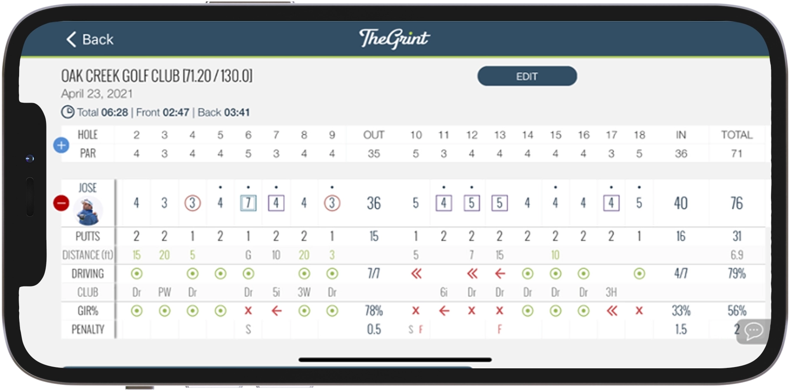

TheGrint is the best
golf scoretracker!

Track as you play
Track as you play
with our advanced score tracker
The advance Score Selector feature will let you track three main additional things which we'll explain in more detail: Far Left or Far Right misses, Tee shot club, and 1st putt distance